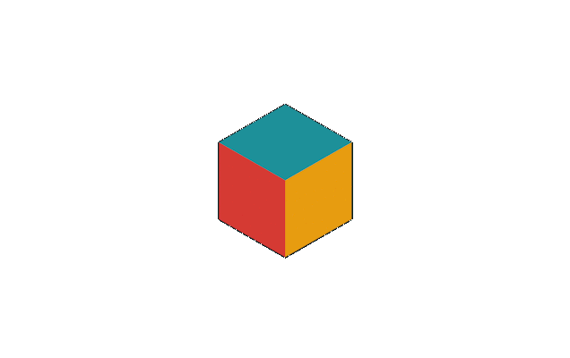
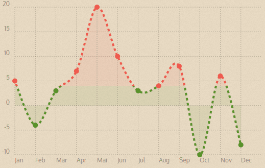
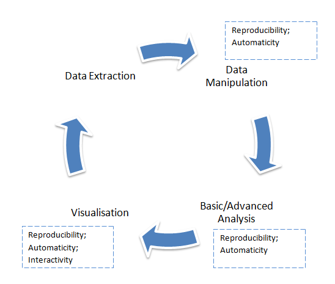

Tools determine:
— What
— How
— & by When
goals can be accomplished...
An Analyst's Toolbox & The Inclusion of R
- Author: Ali Arsalan Kazmi
- Date: 9th April, 2015

Tools may be:
— incorrectly utilised
— under-utilised
— over-utilised
— incorrectly utilised
— under-utilised
— over-utilised

All tools are built to remedy certain problems...
What problems do we remedy using our tools at AIMIA?

Tool No. 1: Automation

Tool No. 2: Reproducibility

Tool No. 3: Visualisation
How could we implement these?
Why R?
- By (mostly) Statisticians, for Statisticians, of Statisticians
- Programming: Functional and Object Oriented (i.e. Structured)
- Continuously Improved
- Free to use & modify
- Programming: Functional and Object Oriented (i.e. Structured)
- Continuously Improved
- Free to use & modify
An Analyst's Workflow

Problems at each stage can be cured with tools...